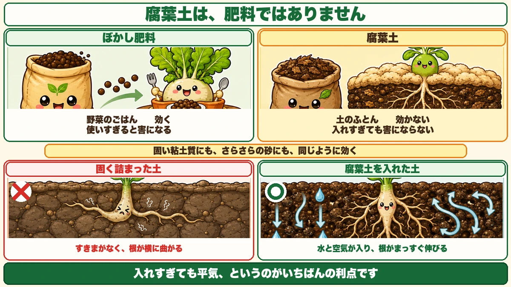
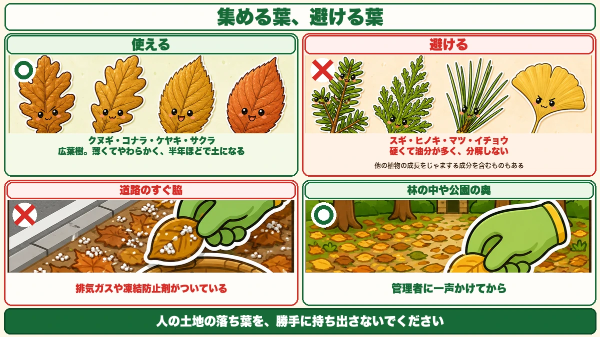
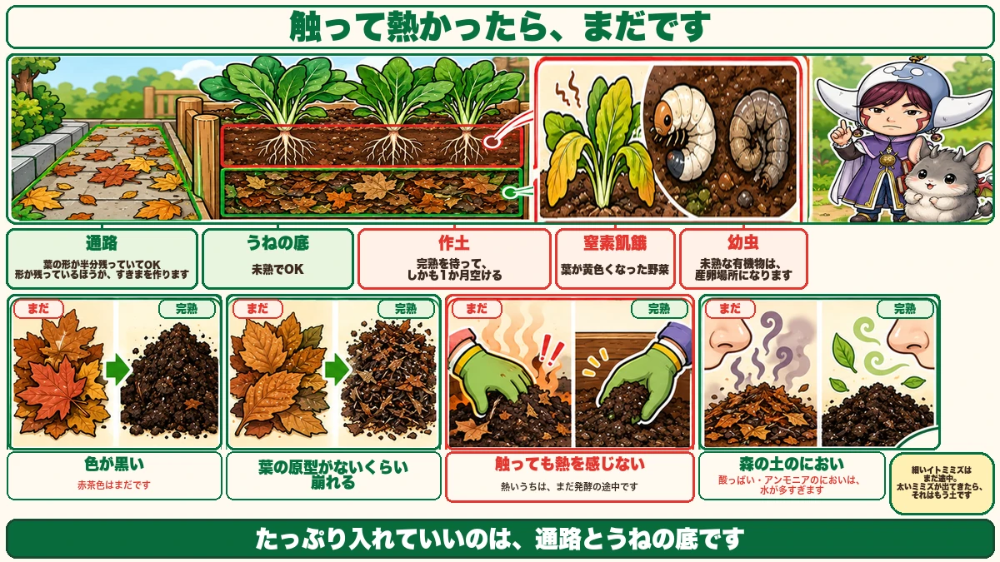
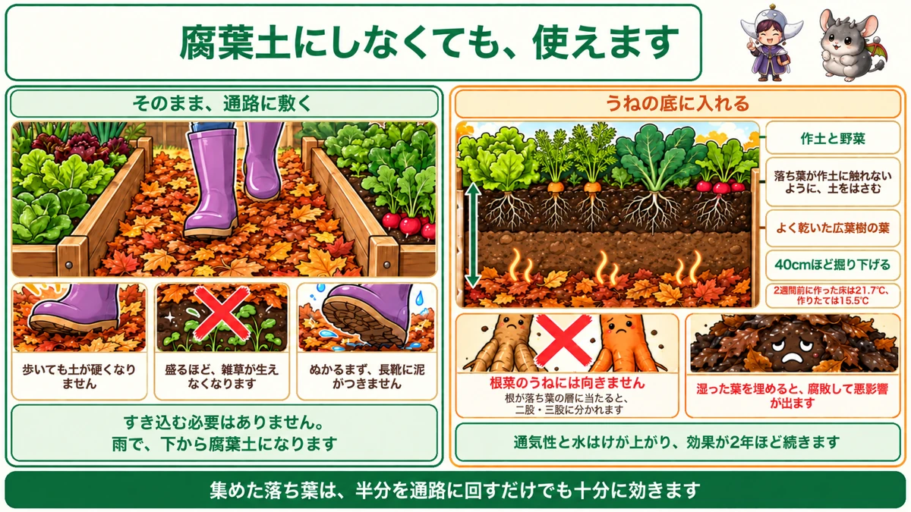
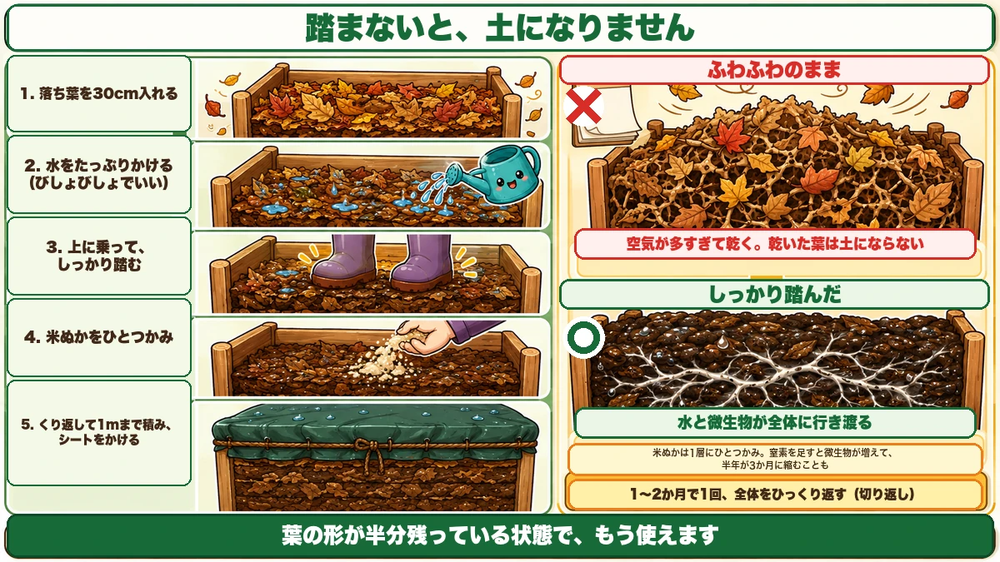

腐葉土の作り方｜落ち葉の集め方・水分の目安・完成の見分け方まで
どうも、8150（えいこう）です🌱 家庭菜園歴8年、理科の教員免許を持っていて、有機・無農薬で野菜を育てています。
📖 この記事の目次
この記事で分かること
- 腐葉土は「肥料」ではなく「土をやわらかくする材料」です。入れる目的をまちがえないことが最初の一歩。
- 材料は落ち葉・土・水・少しの米ぬか。集めるのは11月下旬からがちょうどいい時期です。
- 使える葉は、ケヤキ・コナラ・クヌギ・もみじ・桜などの落葉する広い葉。イチョウと針葉樹は避けます。
- 仕込み方は『穴を掘る』『ゴミ袋に詰める』『段ボールで囲う』の3つ。場所に合わせて選べます。
- いちばん効くコツは水分。目安は50%で、乾いていると何か月たっても進みません。
- できあがりは「黒い・ボロボロ崩れる・熱を感じない・森の匂い」。未熟なまま使うと、虫を呼んだり野菜の栄養を奪ったりします。
秋になると、道ばたや公園に落ち葉がどっさり積もりますよね。あれ、ほんまにもったいないんです。
腐葉土は買うと袋で売っていますが、中身はほぼ落ち葉と時間だけ。材料は冬のあいだしか手に入らないので、この季節に仕込んでおくと、春の土づくりにそのまま使えます。
この記事では、作り方の手順だけでなく「なぜそうするのか」も一緒にお話しします。理由が分かっていると、うまくいかないときに自分で直せるようになりますよ☺️
早見：腐葉土づくりの数字（ひと目で分かる目安）
まず押さえる数字
- 集める時期：11月下旬から。この時期に仕込めば、春の土づくりに間に合わせる計画が立てやすくなります。
- 使う葉：ケヤキ、コナラ、クヌギ、もみじ、桜など落葉する広い葉。小さい葉ほど分解が早めです。
- 避ける葉：イチョウ、杉や松などの針葉樹。枝は取り除きます。
- 集める量の目安：網袋いっぱいで、うね1〜1.5本ぶんくらい。
- 水分：50%前後。ゴミ袋なら「袋の底に開けた切れ目から、軽く水がにじむくらい」。
- 米ぬか：落ち葉の層ごとに、軽くひとつかみ。薄くかぶる程度で足ります。
- 穴を掘る方式：深さ20cm。落ち葉が少なければ60cm四方、多ければ1〜1.5m四方。
- ゴミ袋方式：30リットルの黒いゴミ袋。2週間に1回混ぜると最短3か月、1か月に1回なら半年、放っておくと1年ほど。
- できあがるまで：半年〜1年が目安。自然にまかせると1〜2年という説明もあります。
- できあがりの量：はじめのかさの3分の1〜4分の1くらいまで減ります。
- 畑に入れる時期：植え付けの1か月以上前。できれば2か月寝かせます。
1年の流れ（冬に仕込む場合）
- 11月下旬〜2月：落ち葉を集めて、仕込む。寒いので、仕込んだあとはほとんど進みません。
- 3〜5月：気温が上がって、分解が一気に進みはじめる。月に1回くらい混ぜます。
- 6〜8月：中が乾いていないか確かめる。雨が少ない年は水を足します。
- 9〜10月：できあがりを確かめる。黒く崩れていれば完成です。
- 11月：できた腐葉土を畑に入れる。そして、また新しい落ち葉を集めて次を仕込む。
毎年この流れで回していくと、冬に集めた落ち葉が、翌年の土になっていく、という循環ができます。1回目は手さぐりでも、2年目からはぐっとラクになりますよ。
この数字の使い方
数字がずらっと並ぶと、なんか急にむずかしく見えますよね。大丈夫です、全部を最初から守る必要はありません。
いちばん大事なのは「水分」と「土を混ぜる」の2つだけ。この2つが外れていなければ、時間がかかっても腐葉土にはなります。期間や米ぬかの量は、あとから調整すればええんです。
最初の年は、こんな感じで記録しておくと次の年がぐっとラクになります。
- 仕込んだ日と、使った葉の種類を書いた
- 置き場所（日当たり・水はけ）を決めた
- 水を足した日と、混ぜた日を書いた
- できあがりを「色・崩れ方・匂い・熱」で確かめることにした
作業の手順（時期の順）
1. まず、腐葉土で何をしたいのかを決める

手を動かす前に、ひとつだけ確認させてください。
腐葉土は、肥料ではありません。窒素・リン酸・カリといった肥料の成分は、どれも0.5%に届かないくらいしか入っていないんです。
じゃあ何のために入れるのか。答えは「土の性質を変えるため」です。
- 土がやわらかくなる
- 水をためこむ力が上がる
- 肥料をつかまえておく力が上がる
なので、向いているのはこんな畑です。
- 砂っぽくて、水がすぐ抜けてしまう
- やせていて、肥料を入れてもすぐ効かなくなる
- 踏むとカチカチに固まる
逆に「野菜を大きくしたいから腐葉土を入れる」は、ちょっとずれています。大きくするのは肥料の仕事。腐葉土は、その肥料が効く土台を作る係です。ここを分けて考えるだけで、入れすぎや期待はずれがぐっと減りますよ。
2. 落ち葉を集める（11月下旬〜）
集める時期は、葉がしっかり落ちきる11月下旬からが目安です。冬のあいだはずっと集められます。
集める場所には、けっこうコツがあります。
- アスファルトの上：草が混ざらないので、落ち葉だけがきれいに取れます。いちばん集めやすい場所です。
- 道路わきの側溝：上の層をめくると、下のほうはもう腐葉土になりかけていることがあります。
- 公園：落ち葉そうじにもなるので、近所の人にも喜ばれます。ただし集めてよいかは、管理しているところに確かめてください。
- ガードレールの下や、植え込みの根もと：何年も積もったままになっていて、土に近い状態のものが見つかります。
- 水路のよどみ：泥がついた落ち葉は、上から流れてきた養分を含んでいます。
ちょっと地味な話ですが、道具は「落ち葉ばさみ（落ち葉をつかむ大きなトング）」があると、ほうきもちりとりもいらなくて快適です。
側溝や水路のそばで集めるときは、足もとがすべりやすいので気をつけてください。人の土地や、立ち入りが決められている場所には入らないこと。落ち葉は道ばたにいくらでもあるので、無理をする必要はまったくありません。
集めた落ち葉から、枝は抜いておきます。枝は分解に時間がかかるうえ、ゴミ袋を突き破るんですよね。
3. 使う葉と使わない葉を分ける

落ち葉なら何でもいい、というわけではありません。
使える葉
- ケヤキ、コナラ、クヌギ、もみじ、桜など、秋に葉を落とす広い葉の木
- もみじは葉がうすく、分解が早いので扱いやすい
- 小さい葉ほど分解が早め。大きい葉は時間がかかります
使わないほうがいい葉
- イチョウ：とにかく腐りにくい葉です。筋が硬く、水の中に入れてもなかなか崩れません。
- 杉や松などの針葉樹：脂（あぶら）が多くて、分解が遅くなります。
特にイチョウは、混ざっていると「いつまでたっても葉の形が残っている」原因になりがちです。イチョウ並木の下で集めるときは、ちょっと気をつけてみてください。
4. 仕込み方を3つから選ぶ
ここが決めどころです。置ける場所によって、選ぶ方法が変わってきます。
『穴を掘る』
- 庭や畑のすみに置ける人向け
- 量をたくさん仕込める
- 何度か作ってみると「土の中がいちばん作りやすい」と感じる人が多い方法です
『ゴミ袋に詰める』
- ベランダでもできる
- 場所を選ばない
- ただし、かさが多いまま押し縮められないので、場所を取ります
『段ボールで囲う』
- スーパーでもらえるので費用がかからない
- 上から踏めるので、たくさん詰められる
- 1年で使い切るなら十分もちます（木枠は組むのが大変で、2〜3年で腐ってきます）
どれを選んでも、できあがる腐葉土は同じです。続けやすい方法を選んでくださいね。
5-A. 穴を掘る方式の手順
- 日当たり・風通し・水はけのよい場所を選ぶ。雨がたまる低い場所は避けます。
- 深さ20cmほど掘る。落ち葉が少なければ60cm四方、多ければ1〜1.5m四方。
- 落ち葉を入れて、足で踏む。
- 米ぬかを薄くふる。
- 水をかける。
- 掘り上げた土を少し戻す。
- 3〜6を何度か重ねる。
- いちばん上を土でおおう。
量が少ないのに面積を広くしすぎると、厚みが出ずに分解が遅くなります。少ないときは、狭く深めにまとめるのがコツです。
いちばん上を土でおおっておくと、風で落ち葉が飛んでいきません。
踏むのには、ちゃんと理由があります。踏むと葉がバラバラに砕けて細かくなり、分解役の生き物たちが食べやすくなるんです。
「踏みすぎて空気がなくなったら困るのでは？」と思うかもしれません。たしかに、ぎゅうぎゅうに押し固めると空気が足りなくなって、分解が鈍ります。ただ、落ち葉はもともとすき間の多い材料なので、足で踏むくらいで押し固めすぎることは、まずありません。安心して、しっかり踏んでください。
5-B. ゴミ袋方式の手順
- 30リットルの黒いゴミ袋を用意する。うすい袋なら二重にします。
- 袋の底の両はしを少し切って、水の逃げ道を作る。
- 落ち葉を袋の3分の1まで入れて、米ぬかを軽くひとつかみ、水をかける。
- これを3回くり返して、袋をいっぱいにする。
- 口をしばって、日の当たる場所に置く。
- ときどき袋を上下ひっくり返して、中を混ぜる。
黒い袋のほうが、透明な袋より早く進みます。日の光で中が温まるからです。
混ぜる回数とできあがりの目安は、こんな感じです。
- 2週間に1回混ぜる：最短3か月
- 1か月に1回混ぜる：半年くらい
- ほとんど放っておく：1年くらい
5-C. 段ボール方式の手順
- 段ボールを組んで、底のふたを外側に広げる。
- 広げたふたの上に土をのせて、重しにする（これで風で飛びません）。
- 中に落ち葉を入れて、踏む。
- 米ぬかを薄くふり、水をかけ、土を少し入れる。
- くり返して、いっぱいになったら上を土でおおう。
段ボールは上から踏み込めるので、ゴミ袋よりたくさん詰められるのがいいところです。
6. 土を必ず混ぜる
どの方式でも、ここは外さないでください。
落ち葉だけを積んでも、葉は「くさった葉」にはなっても、なかなか「土」にはなりません。土を入れることで、分解してくれる小さな生き物たちが一緒に入ってくるんです。土で完全におおったほうが、腐熟（ふじゅく：じゅうぶんに分解が進むこと）はどんどん進みます。
近くに積もっていた、土まじりの古い落ち葉があれば、それを少し混ぜるのもおすすめです。もう分解が始まっている「たね」になってくれます。
7. 水分を50%に保つ
ここがいちばんの山場です。
落ち葉が分解するには、水分が50%くらい必要です。
- 少なすぎると：分解がほとんど進みません。乾いたままでは、朽ちていくのを待つだけになります。
- 多すぎると：発酵ではなく「腐敗」になって、いやな匂いが出ます。
最初の落ち葉はからからに乾いているので、思っているよりしっかり水をかけて大丈夫です。ゴミ袋なら、底の切れ目から軽く水がにじむくらいが合図。
よくあるのが、夏のあいだに乾ききって止まってしまうパターンです。気温は十分高いのに雨が少ない年だと、秋になっても葉の形が残っていることがあります。夏は一度、中が乾いていないか見てあげてください。
8. 米ぬかは「少し」で十分
米ぬかを入れると、分解が早くなります。落ち葉は分解しにくい材料なので、米ぬかが分解役の生き物たちのごはんになってくれるんです。
ただし、ここは「多ければ多いほどいい」ではありません。
- 薄くかぶる程度、または層ごとに軽くひとつかみで十分
- 入れすぎると虫がわきやすくなります
- 入れすぎると、よくないはたらきをする菌まで増えてしまいます
米ぬかは、コイン精米所で無料でもらえることがあります。手に入らなければ、米のとぎ汁で代わりにできますし、油かすを使う方法もあります。
そして、米ぬかは入れなくても大丈夫です。時間をかければ、落ち葉はちゃんと分解します。じっくり時間をかけたもののほうが良い腐葉土になる、という考え方もあるくらいです。
入れないほうがいいもの
- 鶏ふんなどの動物のふんから作った堆肥
- 生ゴミを使った堆肥
腐葉土づくりには混ぜないほうが無難です。
9. 混ぜる・寝かせる
穴や段ボールの場合、月に1回くらい混ぜる（切り返す）と、空気が入って分解が進みます。混ぜる回数が多いほど早く仕上がります。
冬のあいだは、寒くて分解役の生き物たちがあまり動きません。仕込んだ翌月に見ても、ほとんど変わっていないことが多いです。ここであせらなくて大丈夫。
春になって気温が上がると、中が温かくなってきて、一気に進み始めます。5月ごろに手を入れると、外の空気より中がずっと温かくなっているのが分かりますよ。
1月に仕込んだときの、よくある進み方
月ごとに中をのぞくと、だいたいこんなふうに変わっていきます。地域や置き場所でずれるので、目安として見てください。
- 2月：ほとんど変化なし。寒くて、分解役の生き物たちがあまり動いていません。
- 3月：少しずつ崩れはじめる。奥に手を入れると、ほんのり温かい。
- 4月：見た目がだいぶ変わってくる。ミミズの姿も見えはじめます。
- 5月：中の温度がぐっと上がる。外の空気より、中のほうがはっきり温かくなります。
- 5月下旬：使える状態に近づく。
冬のあいだに「全然変わらへんやん…」と心配になるかもしれません。でも、それがふつうです。春になってからが本番なので、あせらず待ってあげてください。
逆に、秋に仕込んで「冬を越せば使えるはず」と思っていると、春になってもほとんど葉の形が残っていて、がっかりすることがあります。冬のあいだは止まっている、と思っておくくらいがちょうどいいです。
冬でも早く仕上げたいとき
春の土づくりに間に合わせたいなら、ひと工夫できます。
いちばん手軽なのは、もう分解が始まっている古い落ち葉を「たね」として混ぜる方法です。側溝の底や植え込みの根もとにある、土まじりで黒っぽくなった落ち葉を、新しい落ち葉と一緒に仕込みます。分解役の生き物たちがすでにたくさんいるので、寒い時期でも進みが早くなります。この方法で、冬場でも2か月半ほどで仕上がった例もあります。
発酵を助ける市販の資材を、米ぬかと組み合わせて使う方法もあります。ただ、資材によって量や使い方がちがうので、使うときは袋の説明書きに合わせてください。
10. できあがりを確かめる

次の4つがそろったら、できあがりです。
- 色が黒っぽい
- 葉の形がなくなって、ボロボロと崩れる
- 触っても熱を感じない
- 匂いをかぐと、森の中のようないい香りがする
まだ黄色っぽい葉が混ざっていたら、もう少し待ちます。
もうひとつ、おもしろい見分け方があります。中にいるミミズを見てみてください。細い糸のようなミミズは、まだ分解のとちゅうにいるミミズ。太いミミズがすみついていたら、もう土になっています。
11. 畑に入れる
できあがった腐葉土は、植え付けの1か月以上前に土に混ぜます。できれば2か月寝かせると安心です。
すぐに植えないのには理由があります（あとの「学ぶ」の章でくわしくお話しします）。
苗を育てる土に使うときは、腐葉土だけだと水もちが足りないので、赤土や畑の土を1割くらい足します。育苗に使うなら、半年ものより1年かけたもののほうが、苗が病気になりにくくなります。
失敗の見分け方（症状→原因→やること）
何か月たっても、葉の形がそのまま残っている
- 症状：仕込んだときとほとんど変わらない。カサカサしている。
- 考えられる原因：水分が足りない。土を混ぜていない。イチョウや針葉樹が多い。冬の寒い時期でまだ動いていない。
- やること：まず水を足して、土を混ぜます。冬なら春まで待ちます。イチョウが多いなら、その部分は分けて別にしておきます。
いやな匂いがする
- 症状：すっぱい匂い、アンモニアのようなツンとした匂い、くさった匂いがする。
- 考えられる原因：水が多すぎて、発酵ではなく腐敗になっている。
- やること：乾いた落ち葉や土を足して、水分を下げます。混ぜて空気を入れます。
虫がわいた
- 症状：白いイモムシのような幼虫が出てくる。小さな虫が飛ぶ。
- 考えられる原因：分解が進んでいる途中で、自然に寄ってきたもの。米ぬかの入れすぎ。
- やること：幼虫は種類を見分けます（あとのよくある質問で説明します）。米ぬかは次から減らします。気になるなら上からネットをかけます。
幼虫がいるということは、それだけ分解が進んでいる、ということでもあります。堆肥づくりには付きものなので、見つけても落ち込まなくて大丈夫です。
ウジやハエが大量にわいた
- 症状：うじ虫やハエがたくさん出る。
- 考えられる原因：水の入れすぎで腐敗している。
- やること：これは失敗のサインです。そのまま畑に入れると、くさらせる菌を畑に持ちこむことになります。乾いた落ち葉や土を足して、仕込み直すつもりで扱ってください。
腐葉土を入れたら、野菜の葉が黄色っぽくなった
- 症状：植えたあと、葉の色がうすい。育ちが止まる。
- 考えられる原因：まだ分解しきっていない腐葉土を入れて、すぐに植えた。土の中の栄養が、分解のほうに使われてしまっている。
- やること：次からは、入れてから1か月以上あけて植えます。今の株は、追肥で様子を見ます。
腐葉土を入れたら、虫に根を食べられた
- 症状：苗がしおれる。土を掘ると白い幼虫がいる。
- 考えられる原因：未熟な腐葉土が、コガネムシやヨトウムシの餌になっている。特に8〜9月のうね作りのころは、産卵が多い時期です。
- やること：完熟したものだけを使います。市販品なら「完熟」の表示があるものを選びます。
説明が分かれていること
できあがるまで、どれくらいかかるか
- 半年〜1年という説明：ゴミ袋なら最短3か月。混ぜる回数を増やすほど早くなる、という考え方。
- 1〜2年という説明：自然にまかせると約1年が標準、という考え方。
- どう考えればよいか：混ぜる回数と水分の管理で大きく変わります。こまめに手を入れるなら半年〜1年、ほぼ放っておくなら1年以上を見ておくと安心です。
落ち葉は乾いているほうがいいのか、湿っているほうがいいのか
- 乾いた葉を使うという説明：湿った葉は腐敗しやすく、悪い影響が出る。
- 湿った葉こそ貴重という説明：すでに分解が始まっているから。
- どう考えればよいか：これは使い道がちがいます。乾いた葉が向くのは、うねの底に敷く「落ち葉床」のように、土の中に直接入れる場合。湿った葉が向くのは、腐葉土を作る場合です。どちらも正しくて、目的で使い分けます。
米ぬかは多めか、少なめか
- 少なめにという説明：入れすぎると虫がわき、よくない菌も増える。
- たっぷり入れるという説明：分解が早くなる。
- どう考えればよいか：初めてなら少なめから。虫が気になる場所（ベランダなど）では特に少なめにします。慣れてきて早く仕上げたいときに増やしていけば十分です。
何回混ぜるか
- 月1回混ぜるという説明：回数が多いほど早く分解する。
- ほとんど混ぜなくていいという説明：分解を助ける資材と米ぬかを組み合わせれば、何度も切り返す必要はない。
- どう考えればよいか：何も足さないなら、月1回を目安に。資材を使う場合は、その説明書きに合わせます。
畑にどれくらい入れるか
- 1平方メートルあたり2〜3kgという説明
- 1平方メートルあたり1リットル、または3リットルという説明
- どう考えればよいか：単位も量もそろっていないので、ひとつに決めつけないほうが安全です。最初は少なめに入れて、土のやわらかさを見ながら次の年に増やしていく、という進め方がおすすめです。
よくある質問
腐葉土と、堆肥やぼかし肥料は何がちがうのですか
名前が似ているので、ごちゃっとしやすいところです。ざっくり分けると、こうなります。
- 腐葉土：落ち葉が主な材料。肥料の成分はほとんどなく、土をやわらかくして、水と肥料をためこむ力を上げるためのもの。
- 堆肥：草やわら、落ち葉、家畜のふんなど、生き物由来の材料を分解させたものをまとめた呼び方。腐葉土も、堆肥の仲間のひとつです。牛ふんや鶏ふんから作った堆肥は、肥料の成分も比較的多く含みます。
- ぼかし肥料：米ぬかや油かすのように栄養の多い材料を、発酵させて作る肥料。こちらは、野菜に栄養を届けるのが目的です。
使い分けの考え方はシンプルで、『土そのものを育てたい』なら腐葉土、『野菜に栄養をあげたい』ならぼかし肥料や肥料、という感じです。
ぼかし肥料は、水を入れすぎるとウジやハエがわいて腐敗してしまうことがあります。そうなったものは肥料としては失敗なので、畑には使わないほうが安心です。腐葉土とは、失敗したときの扱いもちがうので覚えておいてください。
ベランダでも作れますか
作れます。ゴミ袋方式なら、畑や庭がなくても大丈夫です。30リットルの黒いゴミ袋を使い、うすい袋なら二重にしてください。
ただ、虫が気になる場所なので、米ぬかは少なめにしておくのが無難です。
近くにイチョウしかありません
イチョウだけで作るのは、正直おすすめしません。とにかく腐りにくい葉なので、いつまでも形が残ります。
広い葉の木が少ない地域なら、公園や林道の側溝など、別の木がある場所を探してみてください。
米ぬかが手に入りません
米ぬかなしでも作れます。時間がかかるだけで、ちゃんと分解します。
早くしたいなら、米のとぎ汁をかける方法や、油かすを使う方法もあります。
白い幼虫が出てきました。捕まえたほうがいいですか
種類によります。掘り出したときの動きを見てください。
- すぐに歩いて逃げようとする：コガネムシの幼虫の可能性が高いです。野菜の細い根を食べるので、取り除きます。
- あまり動かない：カナブンの幼虫かもしれません。こちらは落ち葉を食べて分解を助けてくれるので、腐葉土に戻してあげます。
コガネムシの幼虫は、思っている以上に足が速いんです。「逃げ足が速いほうが悪いほう」と覚えておくと分かりやすいですよ。
腐葉土ができたら、すぐ植えていいですか
植え付けの1か月以上前に入れて、できれば2か月寝かせてください。
完全に分解しきっていない部分が残っていると、土の中の栄養がそちらに使われて、野菜に回らなくなることがあります。
どれくらいの落ち葉で、どれくらいの腐葉土になりますか
できあがると、はじめのかさの3分の1〜4分の1くらいまで減ります。思っているより、ずいぶん小さくなるんです。
目安として、落ち葉を網袋いっぱいに集めると、うね1〜1.5本ぶんくらいに使える量になります。「こんなに集めたのに、これだけ？」となりがちなので、多めに集めておくくらいがちょうどいいです。
冬に仕込めませんでした。春からでも作れますか
作れます。春に仕込むと、気温が高いぶん冬に仕込むより進みが早くなります。
ただし、集められる落ち葉は冬より少なくなります。春は乾燥しやすいので、水分にはいつも以上に気をつけてください。仕込んだら、夏に乾ききっていないか一度のぞいてあげると安心です。
抜いた雑草も一緒に入れていいですか
抜いたばかりの青い雑草は、そのまま入れないほうが無難です。水分が多く、くさりやすいからです。
日に当てて、完全に枯らしてからなら、落ち葉と同じように使えます。畑の草とりで出た草も、むだにせず土に返せますよ。
カブトムシの幼虫が出てきました
それはうれしい知らせです。カブトムシの幼虫がいるということは、まわりによく分解された材料がある、ということ。幼虫が出す粒のようなふんも、よい肥料になります。
コガネムシの幼虫とちがって、野菜の根を食べる心配はほとんどないので、そっと戻してあげてください。
市販の腐葉土は、どう選べばいいですか
袋を開けられるなら、匂いと色を見ます。
- すっぱい匂い、アンモニアのような匂いがするものは避ける
- 色は黒いほど熟している。赤茶色っぽいものはまだ若い
- 葉の形が残っているものは未熟
値段が安いものの中には、葉の形が残った未熟なものもあります。木の皮から作った堆肥（バーク堆肥）が入ったものは、繊維が多くて分解に時間がかかります。
それから、意外と見落としがちなのが「農薬が入っているかどうか」です。袋に「カブトムシの飼育にも使えます」と書いてあるものは、殺虫剤を使っていないという意味でもあります。裏を返すと、殺虫剤入りの商品もある、ということ。無農薬で育てたい方は、表示を一度見ておくと安心です。
落ち葉を、腐葉土にしないで使う方法はありますか
あります。2つ紹介します。
ひとつめは、うねのあいだの通路に敷く方法です。落ち葉を敷きつめておくだけで、雨のあとでも通路がぐちゃぐちゃになりにくく、歩いても土が固くなりません。土にふれたところから少しずつ分解が進み、通路の土がふかふかになっていきます。厚く敷くほど、雑草もおさえられます。
株元に敷くのもおすすめです。乾燥を防ぎ、雨のはね返りで土の中の病原菌が葉につくのを防ぎ、急な寒さ暑さもやわらげてくれます。
ただし注意点がひとつ。拾ってきた落ち葉をそのまま敷くと、虫の卵や、よくない菌を持ちこむこともあります。気になる場合は、腐葉土にしてから使うほうが安心です。
ふたつめは、うねの底に敷く「落ち葉床」です。

- 40cmくらい掘り下げて、いちばん下に落ち葉を入れる
- その上に土の層を作り、落ち葉が根の張る層に直接ふれないようにする
- よく乾いた広い葉を使う（湿った葉は腐敗しやすい）
うねの水はけと通気性がよくなり、根が深く広く張れるようになります。作ってから2週間ほどで、中の温度が作りたてより上がってくるのが分かります。効果は2年ほど続きます。
ただし、ごぼうやにんじんのように、根が深く伸びる野菜には向きません。根の先が落ち葉の層に当たると、二股や三股に分かれてしまいます。
落ち葉の熱で、苗を育てられると聞きました
「踏み込み温床（ふみこみおんしょう）」という、昔から使われてきた方法です。落ち葉が分解するときに出る熱を使って、苗を温めます。
- よく乾いた落ち葉と米ぬかを、交互に重ねる
- 上に土をうすくかぶせる（厚くすると発酵が進みにくい）
- ビニールをかけて保温する
- 1月後半〜2月から苗づくりに使える

電気を使わずに苗を育てられるので、昔の人の知恵ってほんまにすごいなと思います。
学ぶ：落ち葉は、なぜ土になるのか🔬
落ち葉を分解しているのは、小さな生き物たち
落ち葉が土になるのは、勝手に崩れていくからではありません。土の中にいる、目に見えないほど小さな生き物（微生物）や、ミミズ、ダンゴムシたちが、少しずつ食べて分解しているんです。
だから「土を混ぜる」が大事なんですね。土を入れることで、分解してくれる仲間たちを一緒に連れてくることになります。
水分が50%必要なのも、この仲間たちが生きていくのに水がいるから。乾いていると動けず、水びたしだと息ができなくなります。ちょうどいい湿り気が、いちばん働きやすい環境なんです。
落ち葉は「炭素が多くて、窒素が少ない」
ここ、理科の話になりますが、ちょっとだけお付き合いください。
生き物の体を作る材料には、炭素と窒素があります。落ち葉は炭素がとても多くて、窒素が少ない材料です。
分解役の生き物たちは、自分の体を作るのに窒素が必要です。でも落ち葉には窒素が少ない。だから、なかなか食べ進められないんです。
米ぬかを入れると分解が早くなるのは、米ぬかに窒素が多く含まれているからです。窒素が足されることで、生き物たちが元気に食べられるようになります。
この「炭素と窒素の割合」は、炭素率と呼ばれます。ざっくりした目安として、炭素率が15より大きいものは時間をかけて効く「堆肥」、15より小さいものはすぐに効く「肥料」と考えると分かりやすいです。落ち葉や腐葉土は炭素率がとても大きいので、何年もかけてゆっくり分解していきます。すぐに効く土づくりの材料には向かない、というのはこういう理由なんですね。
「窒素飢餓」で、野菜がお腹をすかせる
この理屈が分かると、「なぜすぐに植えてはいけないのか」も見えてきます。
まだ分解しきっていない落ち葉や腐葉土を土に入れると、分解役の生き物たちが一気に増えます。彼らは分解を続けるために、窒素を必要とします。でも材料の中には窒素が足りない。
そこで、まわりの土に含まれている窒素まで使ってしまうんです。
この状態のときに苗を植えると、野菜が使うはずだった窒素が、分解のほうに回ってしまいます。これを「窒素飢餓（ちっそきが）」といいます。葉の色がうすくなって、育ちが止まります。
分解が落ち着いて、生き物たちの数が減ってくると、使われていた窒素がまた土に戻ってきます。だから、入れてから1か月以上、できれば2か月あけるんですね。
自然の中では、100年でたった1cm
最後に、ちょっとびっくりする話をひとつ。
森の中で、落ち葉が自然に積もって土になっていくスピードは、100年でおよそ1cmといわれています。
森を歩いたときに足もとにある土は、それだけ長い時間をかけてできたものなんです。腐葉土づくりは、その何十年分もの仕事を、水と土と米ぬかで半年〜1年に縮めている、ということになります。
そう思うと、袋の中でゆっくり黒くなっていく落ち葉が、ちょっと愛おしく見えてきませんか☺️
まとめ
ここまで読んでくださって、ありがとうございます！
腐葉土づくりのポイントを、もう一度まとめておきます。
- 腐葉土は肥料ではなく、土をやわらかくして、水と肥料をためこむ力を上げる材料
- 集めるのは11月下旬から。アスファルトの上や側溝、公園が集めやすい
- 使うのは落葉する広い葉。イチョウと針葉樹は避け、枝は抜く
- 仕込み方は『穴を掘る』『ゴミ袋』『段ボール』の3つから、置ける場所で選ぶ
- 土を必ず混ぜる。水分は50%前後
- 米ぬかは少しで十分。入れなくても時間をかければできる
- できあがりは「黒い・ボロボロ・熱を感じない・森の匂い」
- 畑に入れたら、植え付けまで1か月以上あける
全部を一度に覚えなくても大丈夫です。まずは落ち葉を集めて、土と水と一緒に袋に入れてみてください。
それだけで、春にはちゃんと土の匂いがしてきます。冬のあいだにしかできない楽しみなので、ぜひこの季節にひと袋、仕込んでみてくださいね🍂
米ぬか
1層にひとつかみ足すだけで、分解が倍ちかく速くなります。
![[商品価格に関しましては、リンクが作成された時点と現時点で情報が変更されている場合がございます。]](https://hbb.afl.rakuten.co.jp/hgb/565b770c.0e767ab7.565b770f.2286fabc/?me_id=1245791&item_id=10001139&pc=https%3A%2F%2Fthumbnail.image.rakuten.co.jp%2F%400_mall%2Figamai-tominaga%2Fcabinet%2Fkome%2Fimgrc0133415879.jpg%3F_ex%3D240x240&s=240x240&t=picttext "[商品価格に関しましては、リンクが作成された時点と現時点で情報が変更されている場合がございます。]")

腐葉土
作るまで待てないときに。完成品の状態を知っておくと、仕上がりの判断がつきます。

備中鍬
切り返しのときに。1〜2か月で1回ひっくり返すと仕上がりが揃います。
![[商品価格に関しましては、リンクが作成された時点と現時点で情報が変更されている場合がございます。]](https://hbb.afl.rakuten.co.jp/hgb/56d752c3.3ce6fd3b.56d752c4.f8896826/?me_id=1209220&item_id=10002030&pc=https%3A%2F%2Fthumbnail.image.rakuten.co.jp%2F%400_mall%2Fhonmamon-r%2Fcabinet%2Fimg3%2Fw4580149745643.jpg%3F_ex%3D240x240&s=240x240&t=picttext "[商品価格に関しましては、リンクが作成された時点と現時点で情報が変更されている場合がございます。]")
くん炭（もみ殻）
一緒に積むと通気がよくなり、いやなにおいが出にくくなります。
![[商品価格に関しましては、リンクが作成された時点と現時点で情報が変更されている場合がございます。]](https://hbb.afl.rakuten.co.jp/hgb/56bc30bc.01c5b89d.56bc30bd.ee310357/?me_id=1231595&item_id=10000412&pc=https%3A%2F%2Fthumbnail.image.rakuten.co.jp%2F%400_mall%2Fplanto-iwa%2Fcabinet%2F2707.jpg%3F_ex%3D240x240&s=240x240&t=picttext "[商品価格に関しましては、リンクが作成された時点と現時点で情報が変更されている場合がございます。]")
あわせて読みたい